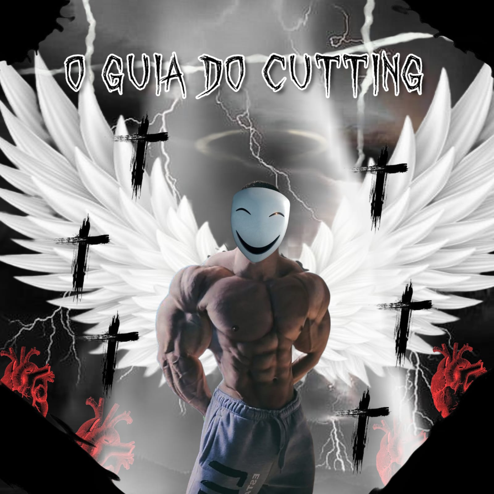

Guia do Bulking e Guia do Cutting Disponivel Abaixo
O Guia do Bulking
Conteúdo presente no Guia :
- Objetivo do Ebook e importância do Bulking no desenvolvimento muscular.
- Definição e conceito do bulking.
- Papel do excedente calórico.
- Desmistificação de mitos e adaptação às necessidades individuais.
- Estabelecimento de metas claras.
- Cálculo de necessidades calóricas e desenvolvimento de plano nutricional e de treinamento.
- Importância das calorias e distribuição de macronutrientes.
- Escolha estratégica de alimentos e suplementação.
- Princípios de treinamento, escolha de exercícios e técnicas avançadas.
- Periodização e importância da recuperação.
- Papel de proteína em pó, creatina, BCAAs e outros suplementos.
- Estratégias para integrar suplementos eficazmente.
- Pesagem, medidas físicas e acompanhamento do desempenho.
- Registros fotográficos, avaliação visual e ajustes contínuos.
- Importância do sono, gerenciamento de estresse e hidratação.
- Estratégias para ambientes sociais, ajustes contínuos e mentalidade de longo prazo.
- Excesso de excedente calórico, falta de ajustes, qualidade dos alimentos e recuperação.
- Sinais de sobretreinamento, dependência excessiva de suplementos e falta de planejamento.
- Recapitulação de lições aprendidas.
- Importância da integração, adaptação contínua, paciência e mentalidade de longo prazo.

O Guia do Cutting
Conteúdo presente no Guia :
- Breve explicação do Cutting e seus objetivos
- Importância de uma abordagem equilibrada para alcançar os objetivos desejados.
- Autoavaliação do estado físico atual como ponto de partida.
- Estabelecimento de metas realistas para orientar o processo.
- Consulta com profissionais de saúde para uma abordagem personalizada.
- Considerações sobre calorias e macronutrientes essenciais no contexto do cutting
- Sugestões de alimentos recomendados para otimizar resultados.
- Estratégias práticas para manter uma hidratação adequada.
- Importância do treino de resistência na preservação da massa muscular durante o cutting.
- Sugestões de estratégias de treino eficientes para potencializar os resultados.
- Destaque para suplementos essenciais durante o cutting.
- Foco na importância da proteína e BCAAs na preservação muscular.
- Ênfase na consulta com profissionais antes de iniciar qualquer suplementação.
- Estabelecimento de um déficit calórico adequado como base para a perda de peso.
- Monitoramento eficaz da ingestão calórica para otimizar resultados.
- Estratégias práticas para evitar platôs de perda de peso durante o processo.
- Desenvolvimento de uma mentalidade positiva para fortalecer o processo de cutting.
- Estratégias práticas para lidar com desafios e frustrações ao longo do caminho.
- Dicas valiosas para manter resultados a longo prazo e promover um estilo de vida saudável.